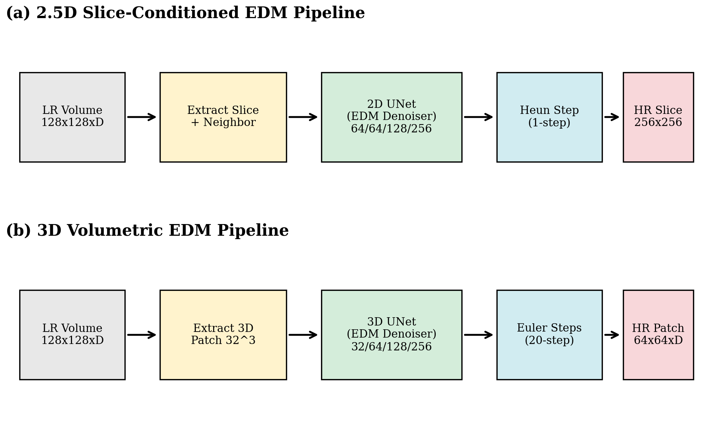
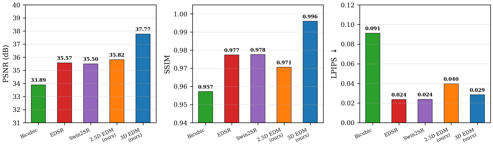
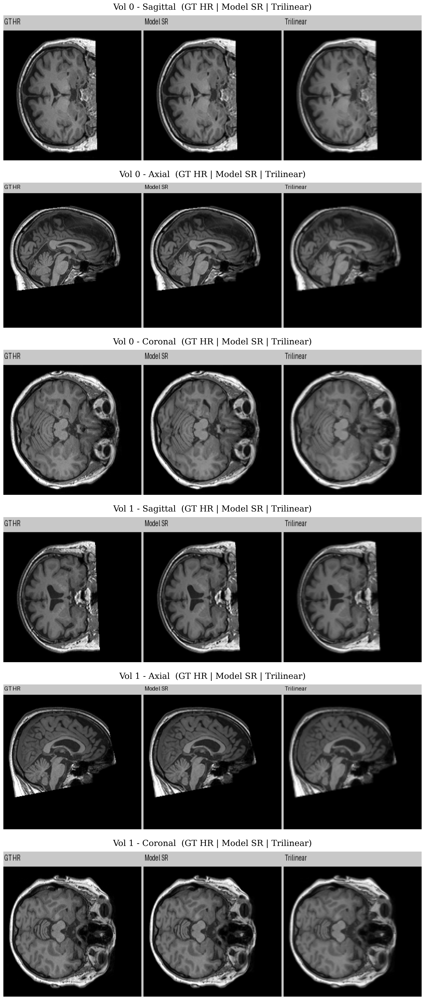
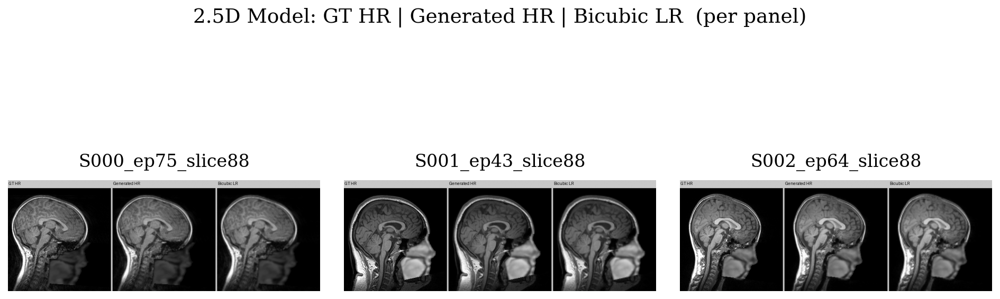
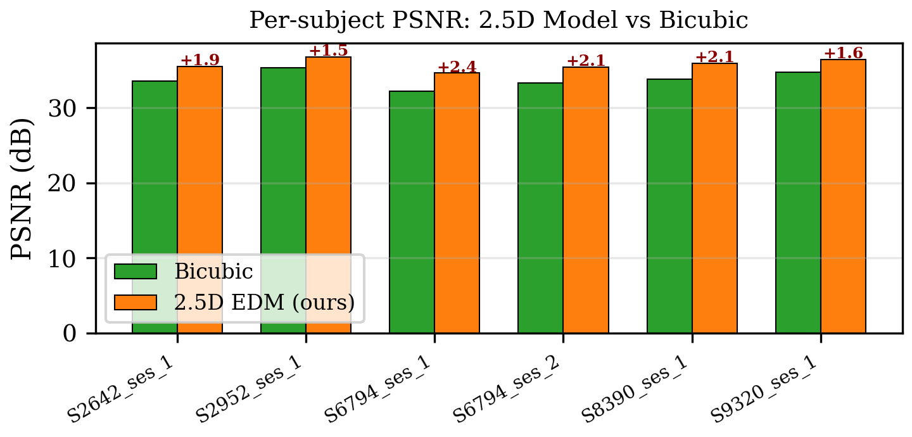
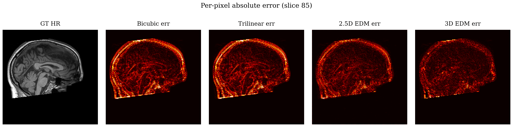
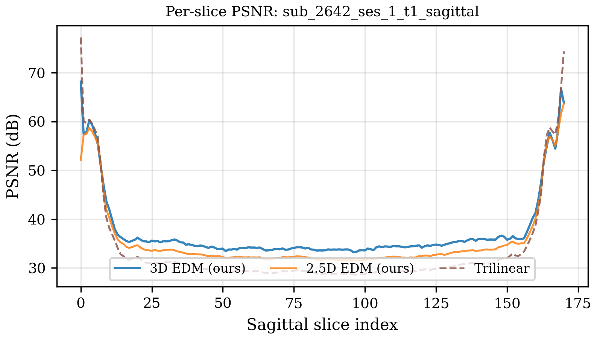

We compare two U-Net architectures — a full 3D convolutional U-Net and a 2.5D slice-conditioned U-Net — for brain MRI super-resolution using the Elucidated Diffusion Model (EDM) framework. Trained on just 59 subjects from the FOMO60K dataset, the 3D model achieves 37.77 dB PSNR and 0.996 SSIM on 2x super-resolution, surpassing pretrained EDSR and Swin2SR baselines by over 2 dB.
Code: GitHub | Weights: HuggingFace | Dataset: FOMO60K / NKI
Demo: Low Resolution to High Resolution MRI


Methods
We adopt the EDM framework (Karras et al., NeurIPS 2022), which parameterizes diffusion using a continuous noise level \( \sigma \) rather than discrete timesteps. The noisy observation is:
$$ \mathbf{x}\_\sigma = \mathbf{x}\_\text{HR} + \sigma \cdot \boldsymbol{\epsilon}, \quad \boldsymbol{\epsilon} \sim \mathcal{N}(\mathbf{0}, \mathbf{I}) $$The denoiser \( D_\theta \) is preconditioned as:
$$ D\_\theta(\mathbf{x}\_\sigma, \sigma) = c\_\text{skip}\,\mathbf{x}\_\sigma + c\_\text{out}\,F\_\theta\!\bigl(c\_\text{in}\,\mathbf{x}\_\sigma,\; c\_\text{noise},\; \mathbf{x}\_\text{LR}\bigr) $$where \( F_\theta \) is the U-Net backbone and the scaling functions \( c_\text{in}, c_\text{skip}, c_\text{out}, c_\text{noise} \) depend on \( \sigma \) and a data standard deviation \( \sigma_\text{data} \). During training, \( \sigma \) is sampled from a log-normal distribution. The model is trained to minimize:
$$ \mathcal{L} = \mathbb{E}\_{\sigma,\, \mathbf{x}\_\text{HR},\, \boldsymbol{\epsilon}} \bigl[\|D\_\theta(\mathbf{x}\_\sigma, \sigma) - \mathbf{x}\_\text{HR}\|^2\bigr] $$Architecture

3D Convolutional U-Net
The 3D model operates on volumetric patches of shape \( (B, C, D, H, W) \). It uses a 4-level encoder-decoder with channel dimensions [32, 64, 128, 256], 3D convolutions (3x3x3), adaptive group normalization conditioned on \( c_\text{noise} \), and multi-head self-attention with flash attention at the deepest level. The LR volume is trilinearly upsampled and concatenated with the noisy HR target. Inference uses a 20-step Euler sampler with sliding-window overlap blending. 50.7M parameters.
2.5D Slice-Conditioned U-Net
The 2.5D model decomposes volumetric SR into per-slice 2D tasks with inter-slice conditioning. For each target slice, it receives: (1) one adjacent LR slice (bicubic-upsampled), (2) the target LR slice (upsampled), and (3) the noisy HR target — concatenated along channels. The 2D U-Net has channel dimensions [64, 64, 128, 256] with self-attention at the deepest level. Inference uses a single-step Heun sampler (0.09 s/slice on Apple MPS). 51.1M parameters.
Training
Both models are trained with AdamW (lr = 1e-4) for 10 epochs on a single NVIDIA L4 GPU (22 GB). The codebase adapts the DIAMOND framework (Alonso et al., NeurIPS 2024) for MRI super-resolution.
Dataset
We use the NKI (Nathan Kline Institute) cohort from the FOMO60K dataset, which provides T1-weighted structural brain MRI volumes at approximately 1 mm isotropic resolution. Volumes are intensity-normalized to [0, 255] using the 1st–99th percentile range, then sliced along the sagittal axis. Each slice is downsampled by a factor of 2 using block averaging to produce the LR input (128x128), with the corresponding HR slice (256x256) as ground truth.
Train/test split: 59 subjects (100 sessions) for training; 5 subjects (6 sessions, 993 slices) held out for testing. The split is at the subject level to prevent data leakage.
Results
| Method | PSNR (dB) ↑ | SSIM ↑ | LPIPS ↓ | Params |
|---|---|---|---|---|
| Bicubic interpolation | 33.89 | 0.957 | 0.091 | — |
| EDSR (DIV2K pretrained) | 35.57 | 0.977 | 0.024 | 1.4M |
| Swin2SR (DIV2K pretrained) | 35.50 | 0.978 | 0.024 | 1.0M |
| 2.5D EDM (ours, 10 ep) | 35.82 | 0.971 | 0.040 | 51.1M |
| 3D EDM (ours, 10 ep) | 37.77 | 0.996 | 0.029 | 50.7M |
All methods evaluated on identical test data and degradation pipeline. EDSR and Swin2SR use pretrained DIV2K weights without MRI fine-tuning.
PSNR and SSIM Comparison

Visual Comparison (3D Model)
Ground truth HR, model prediction, and trilinear baseline across sagittal, axial, and coronal views:

Visual Comparison (2.5D Model)

Per-Subject PSNR

Per-Pixel Error Heatmap
Per-pixel absolute error for a mid-sagittal slice comparing bicubic, trilinear, and 2.5D EDM reconstructions against ground truth:

Per-Slice PSNR
PSNR across the sagittal axis for one test subject. Higher PSNR near volume edges where slices contain less complex anatomy; lower in central slices with denser cortical detail:

Credits:
This project was conducted in collaboration with GENCI who provided the computational resources. Authored by Hendrik Chiche, Ludovic Corcos and Logan Rouge.